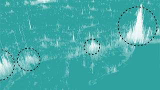
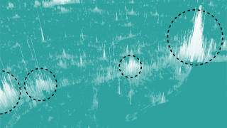

is a digital publication that explains ideas debated in culture with visual essays makes cool shit on the internet. You might know us from
tk spelling
 , but we’ve also published stories about
tk population

,
tk pockets
, and
getting your Spotify roasted
, but we’ve also published stories about
tk population

,
tk pockets
, and
getting your Spotify roasted
 .
So, welcome to The Pudding. Get cozy. You can explore all our stories below.
.
So, welcome to The Pudding. Get cozy. You can explore all our stories below.
Pudding team member
Our Stories

Through data and interviews, learn why the card game Spades is the perfect metaphor for the African-American community.

For groups to succeed, sometimes one person will shoulder more than their fair share of the work. Just ask LeBron James.

A visual history of Rickrolling — millions of comments, posts, and links — that's never gonna let you down.
-
A story about hearing yourself in same-gender pop lyrics for the first time and tracking it with data ever since.

Help us win the New Yorker Cartoon Caption Contest by voting on these AI-generated captions.
-
How many artists overshadow their band after going solo? We crunched the numbers.
-
To help you get out of your geographic music bubble, we found the songs that are most popular far away from you.
-
Science stepped up: on average there were ~11 new coronavirus articles coming out each hour, every hour throughout 2020.
-
Not all nudes are the same. We looked at how names for 6,816 makeup foundations can reveal bias in the beauty industry.
-
This model attempts to predict a wine’s quality. We detect a note of math, with a hint of 0s and 1s.

What do you do when your friends are sick of hearing about your breakup? Use a supercomputer to find a happier ending.

Our auditory analyst compares 770 artists' live recordings with their and studio counterparts. Music snobs rejoice!

We tracked every time someone says "cool" in community. Cool. Cool. Cool.
-
Clue: We crunched the data on this controversial cookie and condiment crossword clue. Answer: Oreo.

How Bad is Your Spotify? Our sophisticated A.I. judges your awful taste in music.
-
Candles and LEDs don't pay for themselves. We'll demonstrate just exactly how much work goes into warding off the dark.
-
These playable mini crosswords let you get a feel for who gets included (and excluded) as clues and answers in puzzles.

Crosswords are known for being too old, too white, and too male. We backed that up with data.
-
Need a cute animal fix? Here's a menagerie of live-streams from your favorite zoos and aquariums all in one place.

Philly openly reports about complaints against police officers. But we found transparency doesn't equal accountability.

Take the quiz: Can you identify when these photos were taken? It may not be as easy as it sounds.
-
We tracked K-pop group sizes and member roles over modern K-pop’s 30-year history. BTS Army click here.
-
A data comic to help you understand how the dance floor is generationally divided.

Using 50 years of data, we explored economic mobility and determined just how rigid the middle class really is.
-
We examined 271 presidential candidate branding designs from 1968–2020. Here's who goes beyond the red, WHITE, and blue.

To help you clear out your inbox, we've compiled a data-driven newsletter of popular links in other newsletters.
-
We quizzed people on how well they recognized '90s songs by their birth year. Britney and Whitney have staying power.
-
What physical traits are most tied to gender in literature? Eye roll: Women are all soft thighs and red lips.

Nearly 14.6M properties in America are in a flood zone, with more likely in the near future. We mapped the scenarios.

Using baby name data, we found the names that could be at risk of becomming future "Karens" in 10, 20, and 30 years.
-
Where do Tripadvisor reviewers go when they're staying local? Our guide to 74,762 US attractions will tell you.

Do you smell what we're cooking? It's stories, facts, and pixel art drawings of over 200 masked wrestlers.
-
Take this quiz to see if you're better than others your age at recognizing songs from history.

What happens when you combine music, a monkey, Joe Rogan, and probability? You get this experiment.

When it comes to sanitizing lyrics, where does Kidz Bop draw the line? (This was pre-WAP though; now all bets are off.)
-
To learn about the US' evolving priorities, norms and biases, we collected every question to ever appear on a census.
-
Emojis are nice, but GIFs have range. We looked at how we use these looped clips of celebs to convey feelings.
-
These are the cities where you'll need your umbrella, ella, ella, eh, eh, eh. Seattle may be less rainy than you think.
-
Find your new jam here. We mapped several month of #1 songs in 3,000 places.

Do authors write where they know? We calculated the distance between where authors lived and where their books were set.
-
America has often been called a nation of immigrants. We mapped where they settled.

Will saying sorry save your reputation? We quantified the lasting impact of a YouTube appology and controversy.

Ranking player performance against pay, we found the worst, highest-paid NBA player, ever. Sorry, Melo.
-
From beehives, to afros, to bumpits: we looked at 30,000 yearbook photos to officially crown the "Big Hair Era."

Do you "lol?" Or "haha?' Or "hehe?" We charted the usage, evolution, and perception of digital laughter.

When an elected official promises to transform prosecution, do their actions live up to their words? We investigated.
-
Everything's bigger in Texas, even the number of exported adoptable dogs. Here's where the dogs in your state are from.

We've devised pub crawl routes between UK watering holes of the same name. One Red Lion down, 338 to go. Cheers!

Is “ass” the most complicated word in English? We tracked down 201 historic usages and compared it to other slang.

Headlines say millennials killed napkins, marriage, and Applebees. We say, "you're welcome." What's next for this group?
-
What were the dominant topics Congressional members were tweeting (and not tweeting) about in 2019?

Are men singing higher in pop songs today? Biebs, the JoBros, the Weeknd, we're coming for you... with data.
-
Are book covers starting to look the same? We organized over 5,000 top-seling book covers by visual similarity.
-
Our 2019 hipster summer reading list will introduce you to an artisanal selection of obscure books before they're cool.
-
Using news coverage, we plotted how one highly unethical study on vaccines has caused outsized, irreparable harm.

Sit back and relax as we take you on an updated journey through every Billboard Top 5 hit to find music’s greatest era.
-
We made a map that replaces UK city names with their most Wikipedia’ed resident.
-
We made a map that replaces US city names with their most Wikipedia’ed resident.
-
Billie Jean is not my lover, but it's one of the names we tracked for this project. Here's how often names are in songs.

Want to access the raw data behind an academic paper? OK. Has it been a few years? Yeah... good luck with that.
-
Since the 1950s, hyphenated last names in pro-sports have been on the rise. The WNBA leads the way, as it so often does.
-
The NBA has a defensive three seconds problem. We tracked how often players are camped in the paint.
-
We looked at 19 years of covers to see Vogue represents women of all shades. You can guess how this went.
-
Why are European regions shifting their borders? We follow the money.

Computers now have four different methods to determine what you’ll type now/next/nexis
-
We looked at every political party platform between 1840 and 2016 to find how often women's issues appeared in the text.

Can you spell the hardest names in the NBA? Or will you miss and spell H-O-R-S-E?

How do you measure who's the biggest pop star? We tackle that question a bunch of different ways.

Do high school basketball stars live up to the hype? Here's how many find success in the NBA.
-
Think Gyllenhaal is a hard name to spell? It gets worse. Here are the many ways to misspell big names in pop culture.
-
School dress codes send the wrong messages about womens' and girls' bodies. An analysis of 481 policies shows why.
-
Who's the most prolific rapper of all time? We try to answer that by measure vocabulary. Happy debating.
-
These are the countries that have most preoccupied Americans since 1900, according to New York Times headlines.
-
We created a brief history of the past 100 years from New York Times headlines. And yes, there are word clouds.

This is a story about how to perceive the population size of cities. Hint: perspective helps.
-
Because you just can't get enough of them, we found every boy band to chart the Hot 100 since 1980.
-
Dear Abby, I'm looking for an analysis of 20,000 advice column letters. Sincerely, Curious. Hi Curious, click this link.

Welcome to Titletown! Discover the most successful cities across baseball, basketball, football, hockey, and soccer.
-
We charted new terrain in these 3D maps of human population.
-
From Cardi B to Carson Wentz: we charted the path to fame from Wikipedia pageviews.

Watch as the design of the iconic Air Jordan morphs from its the first release in 1985 to the present.

Here's who was the most popular person on Wikipedia ever day in 2018.

Who has more emotionally vulnerable lyrics, emo-rap or Dashboard Confessional? We measured each album's sentiment.
-
Let's get reel: who's using film and who's using digital in the movie industry?

We went there. A data investigation into the travesty that is women's pockets.

What Wikipedia pageviews tell us about how famous people are remembered after they die. RIP.

The job automation crisis isn't as simple as turning truck driver's into developers. We break it down with data.

Instead of measuring a city by it's GDP or population, what if we measure it by its airport traffic?
-
No TMI here, just 20,759 people describing their experiences with contraception... and us charting it.

We looked at 1.2 million parliamentary speeches to show how gender representation changes the conversation.
-
We looked at 500,000 congressional speeches to show how gender representation changes the conversation.
-
We mapped how "gayborhoods" are divided by gender. It's true: men are from Chelsea, women are from Park Slope.

Fenty is a champion for makeup inclusivity, but how do other brands compare? We charted their foundation skin tones.
-
The good, the rad, and the gnarly. We took a look at what makes a skate soundtrack.

A supercut of the most-viewed NBA plays from 2017–18. Warning: this video contains a high dosage of LeBron footage.
-
Think you've heard that before? Turns out, hit songs are becoming less musically diverse.

We baked the most average chocolate chip cookie. Recipes written by computers — what could go wrong?
-
Which athletes qualify as one-hit wonders? We charted the greatest single-season anomalies in the last 30 years.
-
Your birthday twin is probably reading this right now. We take on the birthday paradox.
-
In a love letter to NYC and Seattle, we pinpoint the types of businesses that distinguish one neighborhood from another.
-
We watched Ali Wong's Baby Cobra too many times and charted out how she built the routine around a laughter climax.

Here's an interactive guide that introduces and explores waveforms. Volume most defintiely on.

We mapped which countries have laws and guidelines around declaring brain death.

What is the taco capital of the US? Where does BBQ reign supreme? These maps have you covered.

Via postcards from the Curiosity Rover on Mars, we prove that talking about the weather is a universal habit.

There are three sides to every cable news story: MSNBC's, Fox News', and CNN's. The contrast in on-screen text is stark.

We can all agree that drain hair is gross. But it's a thin line between love and hate for more than 3,000 other topics.

A visual walkthrough of how we see Earth from space through the eyes of satellites. Spoiler alert: it's still not flat.

What is black and white and red all over? The racial gap between a newspaper's staff and the community it covers.

How would you define an NBA superteam? We couldn't decide so we built this tool to give you the power.
-
In a musial language that's gone worldwide, we uncover the words that are "most hip-hop"
-
If you exclude Ira Glass' voice, who gets the most airtime on This American Life: men or women? Stay tuned to hear more.
-
In 2017, we mapped the cities and places with the worst access to abortion based on driving times.

Men "gallop" and women "giggle," at least according to the gendered tropes found in 2,000 scripts.

We measured the dialogue from every episode of The Office and it sure is a mouthful. (“That’s what she said.")
-
I'm dining solo, I'm dining solo, solo (Jason Derulo voice). We looked at the dining habits and companions of Americans.

Female characters are largely absent from superhero comics — but when they are included, how are they depicted?

Everytime a job is automated, the Republican Party benefits.
-
What's best for animals in aquariums? We look to the past & present to gauge the future of captive whales and dolphins.

A story about how film plots mirror (or shape) historical events.

Has American literature made progress toward gender equality, or is commercial success still linked to an author's bio?
-
Hurricanes, bankruptcies, and the World Series are all said to spark baby booms.But is there any truth to these tales?

In the words of Ms. Spears, "Oops, I did it again." We show how pop lyrics are getting more repetitive.
-
What's the most timeless NBA play? We turn to YouTube views to determine which have the most replay value.

Let's raise a pint to the microbrew capitals of the U.S. Cheers!

Why does the U.S. lead the world in incarceration? We try to answer this question with data.

Here's how Russell Westbrook made NBA history in 2017.

In the NBA, is home court advantage down to favorable home court officiating? We break down the stats.
-
Like teams in the Super Bowl, the popularity of Oscar contenders can also be regional. Here are the hotspots from 2017.

A lot can happen in the last 2:00 of an NBA game and the refs don't always get it right. We tracked the calls in 2018.
-
We used Google search data to measure slang, and it has us shook.

Inspired by Ava DuVernay’s documentary 13th, we mapped the change from "slave to criminal with one amendment."

What are the odds an artist will make it big? Three years and 75,000 concerts later, we finally have an answer.
-
This is the site where it happens. We visualized every line from Hamilton.
-
We analyzed 12,147 images to see how the media covers Trump and Clinton. It's not a pretty picture.

An interactive story of what happens when a genius samples a genius: Robert Glasper, Miles Davis and “Ghetto Walkin.”

Hindsight is 20/20. We redraft decades of NBA picks using their career stats to find the breakouts and the busts.
-
Miles Davis is mentioned on 2,452 Wikipedia pages. We analyzed them all.
-
Sit back and relax as we take you through every Billboard Top 5 hit from 1958–2016 to find music’s greatest era.
-
These are the most unlikely NBA comebacks from the 2015–16 season. Harden, Curry, James: the gang's all here.
-
This is the largest analysis of film dialogue by gender. Yes, even Disney has films with fewer lines for women.
-
What counts as "punk" music? We turned to Spotify and YouTube playlists to answer this question.

Here are the writers, directors, and producers who make films that fail the Bechdel test.
-
Is it an east coast vs. west coast thing? Every hip hop record label, since 1989, sorted by Billboard chart performance.
-
We used Spotify plays to track the most timeless songs of all-time.

How Outkast brought their southern roots to hip hop, in charts.